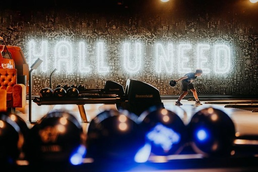

Une partie ou ligne se joue en 10 frames, soit 10 fois les 10 quilles à faire tomber. Vous devez en 2 lancers maximum, abattre les 10 quilles, si possible. En 1 seul lancer, vous avez réussi le mythique Strike , en 2 lancers, vous réalisez un Spare. Les scores sont désormais calculés automatiquement par la machine.
Réservation
